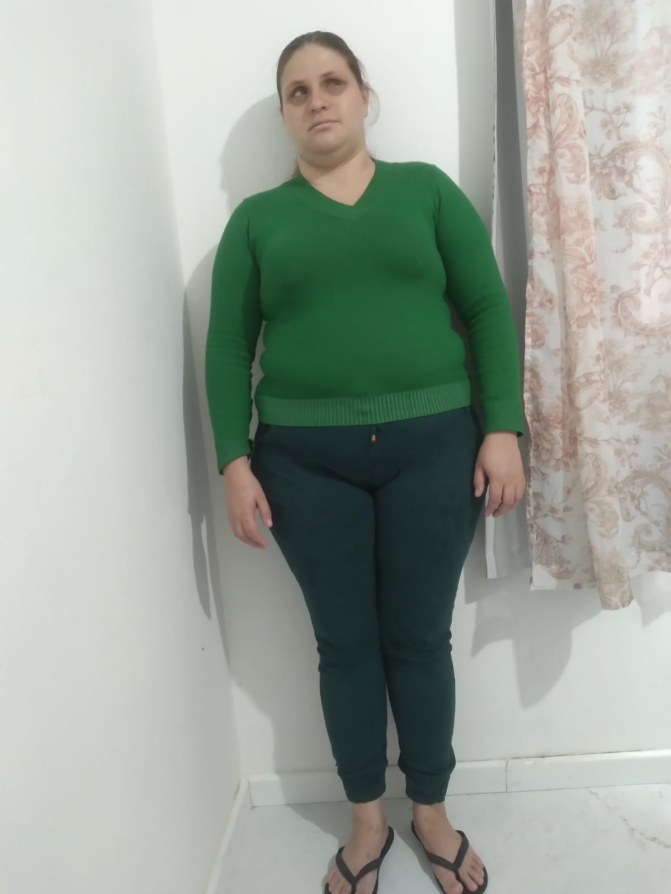

Quem sou eu?
Sou Pâmela, tenho 23 anos, moro em florianópolis, Santa Catarina, Brasil, sou judoca, sou mãe de um menino lindo de 4 anos, estou cursando web fulstack na Labenu, empregada pela Loggi como dev Junior.
Minhas habilidades
- Java
- JavaScript
- Html
- Judoca
- Mãe